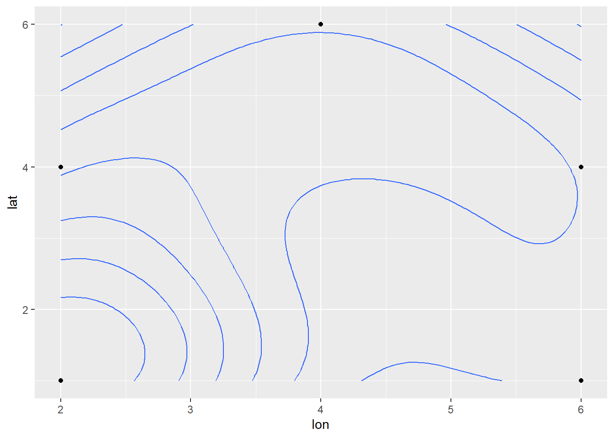

Dataset
A very small data set is contained in Geoms_Example.csv. Please load these data and display the results.
Geoms I
Create a base plot that maps x to the “lon” variable and y to the “lat” variable. Add geom_s to this base plot to make the eight plots we made during lecture.
Geoms II
There are other geom_s that we did not discuss during lecture. Of the others, geom_density_2d(), geom_hex(), geom_step(), geom_rug(), and geom_label() (note that geom_label() requires the same aes() argument as geom_text(). Try adding two of these geom_s to your base plot from above. Explain what was plotted (note that you may want to perform an internet search on the geom_ name for help with what it is plotting).
Geoms III
Add one or more of the geom_ from “Geoms I” above AND one or more of the geom_s from “Geoms II” above to create a single plot that is at least somewhat interesting (with the understanding that it is probably not that interesting yet as we don’t have much in our toolbox yet).
